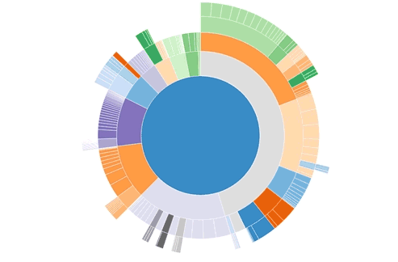
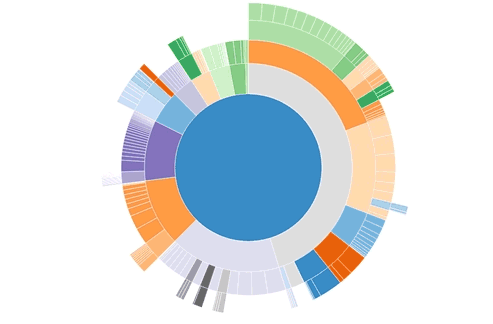

Mimovládna nezisková organizácia ktorej poslaním je podporovať všestranný rozvoj dieťaťa a mladého človeka
Za rok 2012 sa stala Hodina deťom najznámejšou značkou v neziskovom sektore na Slovensku (prieskum Median 3-4/2012)
www.nds.sk
Prehľadová prezentácia
Ján ZázrivecMimovládna nezisková organizácia ktorej poslaním je podporovať všestranný rozvoj dieťaťa a mladého človeka
Za rok 2012 sa stala Hodina deťom najznámejšou značkou v neziskovom sektore na Slovensku (prieskum Median 3-4/2012)
www.nds.sk
 

UI design, ktorý sa vie automaticky prispôsobiť veľkosti zobrazovacej jednotky
Use a spacebar or arrow keys to navigate